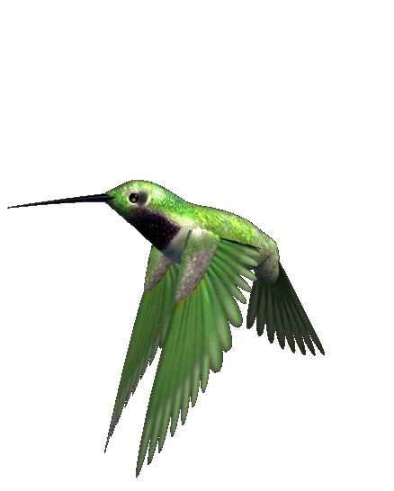
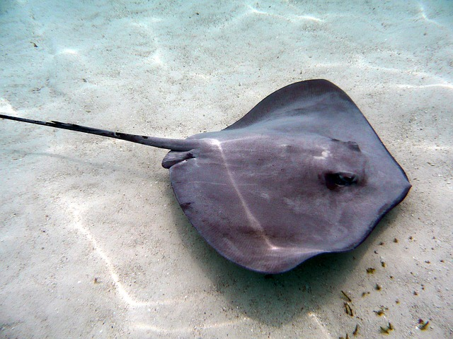
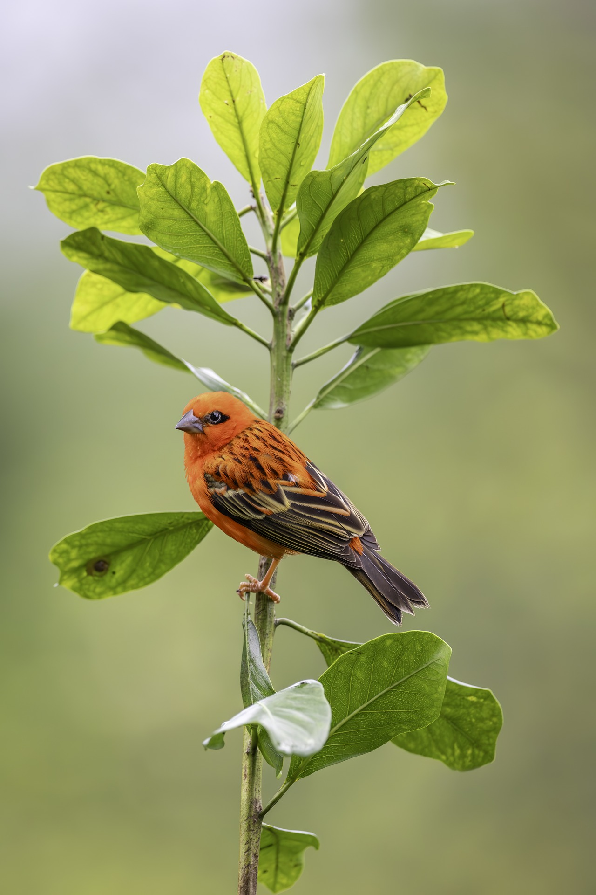
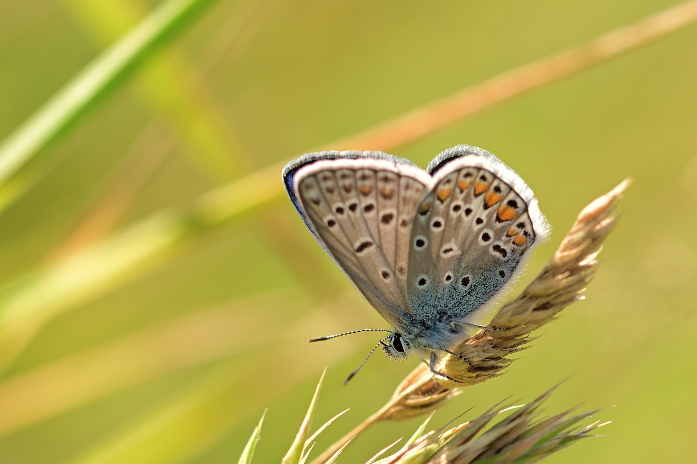
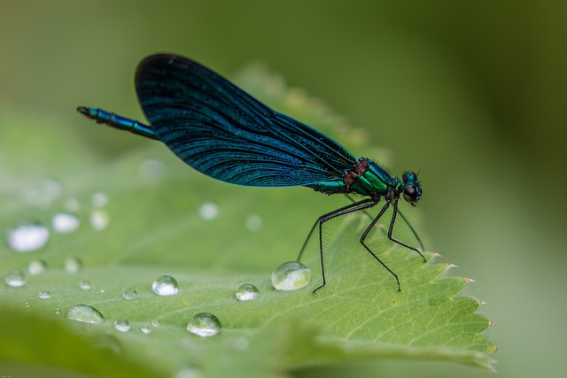

Colibrí
El colibrí, también conocido como picaflor o chuparrosa, es un pequeño ave que pertenece a la familia Trochilidae. Estas aves son especialmente conocidas por su gran agilidad y capacidad para volar hacia adelante, hacia atrás y de lado, gracias a la estructura única de sus alas, que les permite batirlas a una velocidad de hasta 80 veces por segundo. Los colibríes tienen un tamaño que varía desde aproximadamente 2.5 hasta 20 cm de longitud, dependiendo de la especie. Su plumaje es generalmente brillante y colorido, presentando una amplia gama de colores iridiscentes, que pueden ir desde verdes y azules hasta rojos y morados. Esta coloración es especialmente prominente en los machos, quienes suelen tener plumajes más vibrantes que las hembras.
Mantaraya
La mantarraya, perteneciente al orden Myliobatiformes, es un pez cartilaginoso que se caracteriza por su cuerpo plano y su forma aplanada con alas, lo que les confiere una apariencia similar a la de un ave en vuelo cuando se deslizan por el agua. Estos animales son conocidos por su elegante movimiento y su capacidad para realizar saltos acrobáticos fuera del agua. Existen varias especies de mantarrayas, siendo las más comunes las mantarrayas de arrecife (Manta alfredi) y las mantarrayas gigante (Manta birostris). Las mantarrayas pueden alcanzar una envergadura de hasta 7 metros o más en el caso de las especies más grandes. Características principales: Cuerpo: Su cuerpo es plano y se extiende lateralmente, con las aletas pectorales que crean una forma de "dron" cuando nadan. Cabeza: Tienen una cabeza ancha con una boca grande en la parte inferior, que utilizan para alimentar de plancton y pequeños peces al filtrar el agua. Cola: La cola de la mantarraya es generalmente delgada y puede llevar un aguijón en algunas especies, aunque no son agresivas y no lo utilizan a menos que se sientan amenazadas. Coloración: Su color varía entre especies, pero a menudo presentan tonalidades que van desde el color gris hasta el azul oscuro, con patrones únicos en su piel que pueden ayudar en el reconocimiento individual.
Pájaros
Los pájaros son vertebrados de sangre caliente que pertenecen a la clase Aves. Se caracterizan por su plumaje, que les permite volar; sus huesos son generalmente huecos y ligeros, lo que contribuye a su capacidad para el vuelo. Tienen un pico en lugar de dientes, y sus patas son adaptadas a diferentes tipos de hábitats y hábitos alimenticios. Existen miles de especies de pájaros, cada una con características particulares. Algunos son conocidos por su canto melodioso, como los canarios o los ruiseñores, mientras que otros, como los halcones y águilas, son reconocidos por su aguda vista y habilidades de caza. Los pájaros se encuentran en casi todos los ecosistemas del planeta, desde selvas tropicales y desiertos hasta áreas urbanas.
Las aves cumplen numerosos roles en los ecosistemas, incluyendo la polinización de plantas, la dispersión de semillas y el control de insectos. Muchas especies son migratorias y se desplazan grandes distancias según las temporadas. La diversidad de colores, formas y comportamientos entre las diferentes especies de pájaros es vasta, lo que los convierte en uno de los grupos de animales más fascinantes para estudiar y observar
Mariposa
La mariposa es un insecto perteneciente al orden de los lepidópteros, que se caracteriza por tener dos pares de alas cubiertas de escamas microscópicas, lo que les otorga sus vibrantes y variados colores. Estas criaturas son conocidas por su belleza y diversidad, con miles de especies que habitan en diferentes ecosistemas alrededor del mundo
Las mariposas pasan por un ciclo de vida que incluye cuatro etapas: huevo, larva (oruga), pupa (crisálida) y adulto. Este proceso se conoce como metamorfosis completa. Las orugas son generalmente herbívoras y se alimentan de hojas, mientras que las mariposas adultas suelen alimentarse de néctar de flores, utilizando su probóscide para acceder a los líquidos azucarados
En dónde conocer más de los animales
Animal Planet es un canal de televisión y una plataforma de contenidos que se centra en la vida animal y la naturaleza. Su propósito principal es educar y entretener al público sobre diversas especies animales, sus comportamientos, habitats y conservación. A través de documentales, programas de realidad y series informativas, Animal Planet busca: Educación: Informar al público sobre la biodiversidad y la importancia de la conservación de los ecosistemas y de las especies en peligro de extinción. Entretenimiento: A través de narraciones interesantes, espectáculos y programas que muestran la vida silvestre de manera accesible y entretenida. Conciencia ambiental: Fomentar una mayor apreciación de la naturaleza y el compromiso hacia la protección del medio ambiente y los animales. Investigación y conservación: Promover la investigación sobre el comportamiento animal y apoyar iniciativas de conservación en diferentes partes del mundo.
Libérula
La libélula es un insecto que pertenece al orden Odonata, suborden Anisoptera. Se caracteriza por su cuerpo alargado y delgado, así como por sus grandes alas transparentes que generalmente exhiben una hermosa variedad de colores y patrones. Las libélulas son conocidas por su vuelo ágil y rápido, siendo capaces de volar hacia adelante, hacia atrás y incluso suspenderse en el aire. Características físicas: Cuerpo: Suelen tener un cuerpo largo y delgado, que puede variar en tamaño y color dependiendo de la especie. Alas: Tienen dos pares de alas que no están unidas entre sí, lo que les permite un rango de movimiento muy amplio.
Las alas suelen ser transparentes y pueden tener venas visibles. Ojos: Poseen ojos grandes y compuestos que les brindan una excelente visión, crucial para detectar presas y depredadores. Hábitat: Las libélulas se encuentran comúnmente cerca de cuerpos de agua dulce, como estanques, lagos y ríos, donde sus larvas, llamadas ninfas, pasan la mayor parte de su vida acuática.
